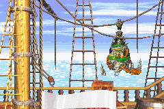
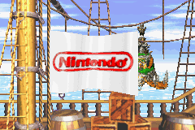

Donkey Kong Country 2 (USA)
EEPROM 64K Save Format Spec gbakit Built-In 📺 Joybus 💾 MultiBoot 🎮 4P Link
Cartridge Identity
- Game Code
B2DE(FamilyB2D)- Header Title
RAREDKC2- Maker / Revision
01/ rev0- ROM Size
- 8.0 MiB (8,388,608 B)
- Save Media
EEPROM 64K- SHA-256
02d0756f7e95308aec4f44598433e93a9a66bf5eabbf0cec7fd8d5f31a06a2f5- Engine / SDK Group
comm-002(145 families)
Screenshots


Link Cable & Multiplayer Communications
This title contains detected communication capabilities: 📺 Joybus 💾 MultiBoot 🎮 4P Link.
Detailed protocol specifications, SIO registers, Joybus commands, and MultiBoot sequences are documented in the Link & Multiplayer Reference.
- Multi-Player SIO (4P)
- 16-bit ring network · SIOCNT (
0x04000128) literals:0x014564,0x014784,0x014c4c· SIODATA32/SIOMULTI0 (0x04000120) literals:0x015e44 - GameCube Joybus
- Register literal
REG_JOYCNT(0x04000140) at offset0x143b30 - GameCube Joybus
- Register literal
REG_JOY_RECV(0x04000150) at offset0x039700 - Single-Cart MultiBoot
- Single-Cartridge MultiBoot (Download Play) client/server handler · Thumb SWI 0x25 (
0xDF25):0x0f138c,0x0f28b4,0x1f04c4,0x210730
Battery Save Format Specification
Open Full Save Format SpecDownload save-format.json
- Specification Coverage
- 6 mapped fields · 1 verified checksum(s) · Confidence: HIGH
- gbakit Built-In Support
- Built-in (B2DE)
gbakit save verify B2DE save.sav
gbakit save decode B2DE save.sav
gbakit save fix B2DE damaged.sav -o repaired.savObserved Battery Save Layout
- Fill Byte & Active Size
0xFFfill · 1,164–1,164 / 8,192 B active (entropy 1.79 bits/B)- Active Offset Ranges
0x0–0x487,0x48C–0x48F(2 total)- ASCII Magic / Headers
522G,YDDCKD,RCNUFXID,dKDCKDCKDDCKDCKDC,CKDCK,DCKD,CKDCKDCKKDCKDCKD- Observed Variable Regions
- 0 bytes across 0 spans: None
- Candidate Checksum/Counter Spans
- None
ROM Assets, Compression & Audio
- BIOS Compression
- LZ77 (
0x10): 1,186 streams · RLE (0x30): 798 streams - ROM Pointer Tables
- 104 tables (0 pointing to validated compressed streams)
- SDK Backup Tags
EEPROM_V124
Asset Map (formatkit.asset-map.v1)
Download B2DE-r0-02d0756f7e95308a.asset-map.json.gz (98,896 B (96.6 KiB)) Verified PASS · 1.06% coverage
| Metric | Bytes / Value | Entries |
|---|---|---|
| Identified | 89,028 B (86.9 KiB) (1.06%) | 861 |
| Mapped | 0 B (0.00%) | 0 |
| Opaque | 0 B (0.00%) | 0 |
| Unknown | 8,299,580 B (7.92 MiB) (98.94%) | 826 |
| Total ROM Size | 8,388,608 B (8.00 MiB) | 1,687 |
| Coverage % | 1.06% | — |
| Entries w/ Code Refs | 895 / 1,687 (53.05%) | — |
Top Identified Formats: gfx.gba-palette (842 · 57,184 B (55.8 KiB)) · audio.rare-sample (14 · 29,980 B (29.3 KiB)) · compress.bios-huffman (2 · 1,078 B (1.1 KiB)) · compress.bios-rle (2 · 594 B) · gba.rom-header (1 · 192 B)
Largest unknown Extents (Headerless / Custom Asset Candidates)
| Offset | Size | Shannon Entropy | Code Refs |
|---|---|---|---|
0x005DA9AC | 1,727,956 B (1.65 MiB) | 6.589 bits/B | 0 |
0x00326C9C | 1,481,644 B (1.41 MiB) | 7.932 bits/B | 0 |
0x002A4100 | 506,572 B (494.7 KiB) | 7.750 bits/B | 0 |
0x004A0908 | 415,084 B (405.4 KiB) | 7.579 bits/B | 0 |
0x005641F4 | 236,552 B (231.0 KiB) | 6.641 bits/B | 0 |
gzip -dk B2DE-r0-02d0756f7e95308a.asset-map.json.gz && gbakit map verify rom.gba B2DE-r0-02d0756f7e95308a.asset-map.json
gbakit assets export rom.gba --asset-map B2DE-r0-02d0756f7e95308a.asset-map.json -o out/Text, Fonts & Scene Data
- Primary Text Encoding
- Plain ASCII (uncompressed) (
252ASCII strings) - Font & VWF Indicators
- VWF Width Table 1bpp Font · BIOS SWIs: BitUnPack
0x10:15· LZ770x11/12:21· Huffman0x13:5· RLE0x14/15:10 - Scene & Packaging
81ROM pointer tables (≥32 entries,5≥200) ·36relativeu32TOCs ·122OAM metasprite hits
Hardware MMIO Subsystems
ppu_display0x800a1c4,0x800e338,0x8013870,0x8013ba0,0x8014594,0x8025ac0,0x8025e38,0x8026030
Regional Variants & Revisions (Family B2D)
- Donkey Kong Country 2 (Europe) (En,Fr,De,Es,It) (
B2DP, 8 MiB) - Super Donkey Kong 2 (Japan) (
B2DJ, 8 MiB)